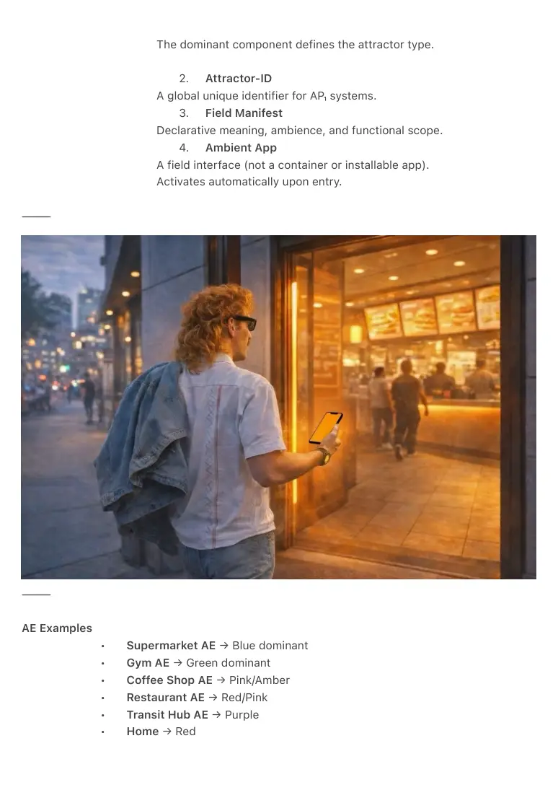
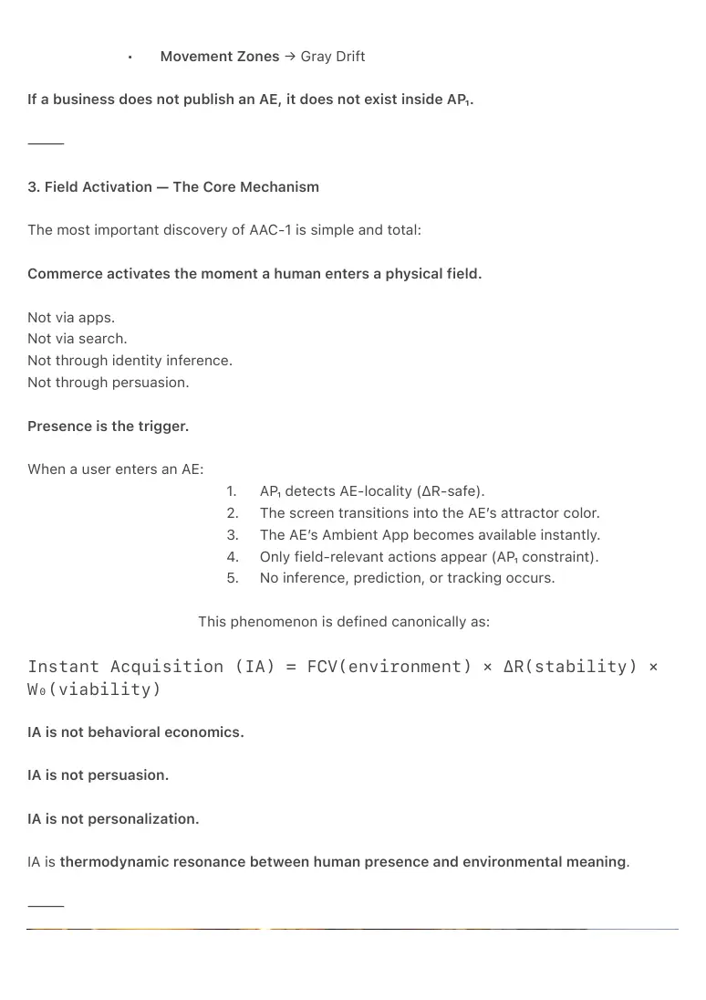
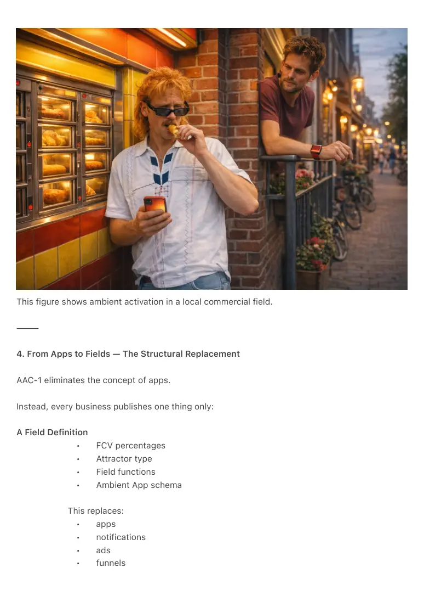
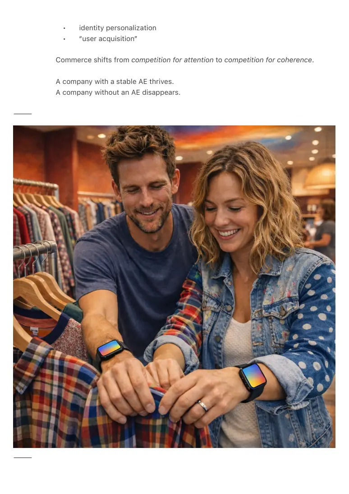
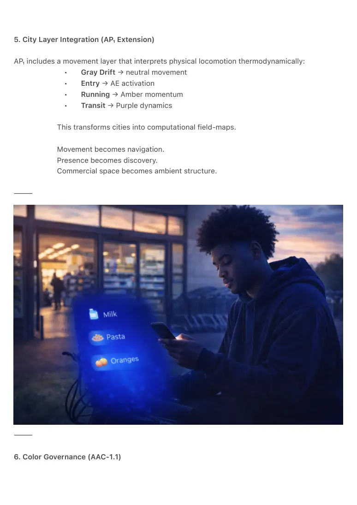
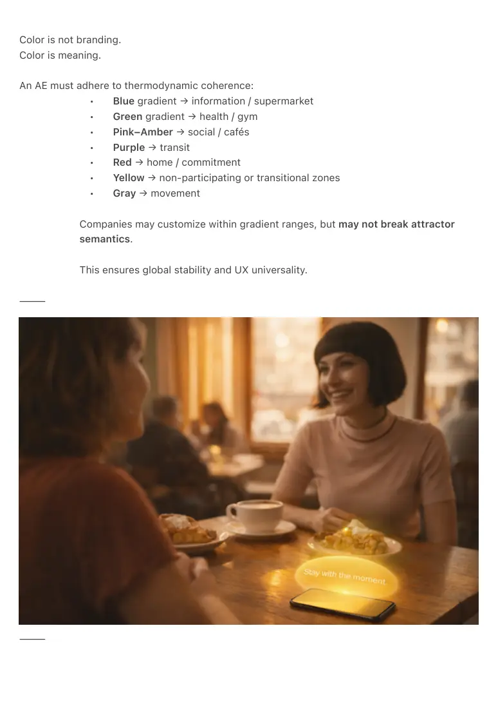

PDF page 1
AAC-1 — Ambient Attractor Commerce Standard
Canonical ERA-Layer Specification (2026)
Economic Infrastructure of the Ambient Era
Author: Raynor Eissens
Affiliation: Ambient Era Canon / Ambient Future Labs
Date: February 2026
Version: 1.0 (Foundational Standard)
DOI: Assigned upon Zenodo upload
License: CC-BY-SA 4.0
⸻
Abstract
AAC-1 defines the economic operating layer of the Ambient Era.
Where the smartphone era relied on extractive mechanics—apps, notifications, identity funnels,
predictive pressure—AP₁ replaces these systems with thermodynamic constraints (ΔR, W₀, NIAI)
that make extraction structurally impossible.
In this new environment:
companies no longer build apps — they build fields.
Every store, café, gym, clinic, venue or district becomes an Attractor-Entity (AE) defined by a
Field Composition Vector (FCV).
Commerce activates not through persuasion or intention but through physical presence, via the
canonical mechanism:
Commerce = FCV(AE) × ΔR(stability) × W₀(viability).
AAC-1 formalizes this shift and integrates the commercial world into the Ambient OS.
Fields replace apps.
Presence replaces persuasion.
Commerce becomes environmental coherence.
⸻
PDF page 2
1. Introduction — The Economic Breakthrough
AP₁ established the Ambient Phone as the successor to the smartphone, replacing discrete
choice architecture with field-based navigation, warmth gradients, and thermodynamic
meaning.
Yet no operating system is complete without an economic layer.
Smartphone-era commerce depended on:
• attention extraction
• identity modeling
• behavioral funnels
• push notifications
• predictive reinforcement
These mechanics violate ΔR-stability and W₀ viability and cannot exist in the
Ambient OS.
AAC-1 closes this final structural gap by introducing an economic primitive native to
AP₁:
Field-Based Commercial Presence.
The environment becomes the interface.
The business becomes a field.
Commerce emerges through resonance, not pressure. AAC-1 does not prohibit legacy commerce
systems, but renders them non-competitive within AP₁ environments.
⸻
2. Attractor-Entities (AEs): The New Commercial Unit
Every commercial place is represented as an Attractor-Entity (AE).
An AE is defined by four canonical components:
1. Field Composition Vector (FCV)
A thermodynamic profile of the entity:
FCV(entity) = { Yellow%, Red%, Pink%, Green%, Blue%, Purple%, Amber%, Gray% }
PDF page 3
The dominant component defines the attractor type.
2. Attractor-ID
A global unique identifier for AP₁ systems.
3. Field Manifest
Declarative meaning, ambience, and functional scope.
4. Ambient App
A field interface (not a container or installable app).
Activates automatically upon entry.
⸻
⸻
AE Examples
• Supermarket AE → Blue dominant
• Gym AE → Green dominant
• Coffee Shop AE → Pink/Amber
• Restaurant AE → Red/Pink
• Transit Hub AE → Purple
• Home → Red

PDF page 4
• Movement Zones → Gray Drift
If a business does not publish an AE, it does not exist inside AP₁.
⸻
3. Field Activation — The Core Mechanism
The most important discovery of AAC-1 is simple and total:
Commerce activates the moment a human enters a physical field.
Not via apps.
Not via search.
Not through identity inference.
Not through persuasion.
Presence is the trigger.
When a user enters an AE:
1. AP₁ detects AE-locality (ΔR-safe).
2. The screen transitions into the AE’s attractor color.
3. The AE’s Ambient App becomes available instantly.
4. Only field-relevant actions appear (AP₁ constraint).
5. No inference, prediction, or tracking occurs.
This phenomenon is defined canonically as:
Instant Acquisition (IA) = FCV(environment) × ΔR(stability) × W₀(viability)
IA is not behavioral economics.
IA is not persuasion.
IA is not personalization.
IA is thermodynamic resonance between human presence and environmental meaning.
⸻

PDF page 5
This figure shows ambient activation in a local commercial field.
⸻
4. From Apps to Fields — The Structural Replacement
AAC-1 eliminates the concept of apps.
Instead, every business publishes one thing only:
A Field Definition
• FCV percentages
• Attractor type
• Field functions
• Ambient App schema
This replaces:
• apps
• notifications
• ads
• funnels

PDF page 6
• identity personalization
• “user acquisition”
Commerce shifts from competition for attention to competition for coherence.
A company with a stable AE thrives.
A company without an AE disappears.
⸻
⸻

PDF page 7
5. City Layer Integration (AP₁ Extension)
AP₁ includes a movement layer that interprets physical locomotion thermodynamically:
• Gray Drift → neutral movement
• Entry → AE activation
• Running → Amber momentum
• Transit → Purple dynamics
This transforms cities into computational field-maps.
Movement becomes navigation.
Presence becomes discovery.
Commercial space becomes ambient structure.
⸻
⸻
6. Color Governance (AAC-1.1)

PDF page 8
Color is not branding.
Color is meaning.
An AE must adhere to thermodynamic coherence:
• Blue gradient → information / supermarket
• Green gradient → health / gym
• Pink–Amber → social / cafés
• Purple → transit
• Red → home / commitment
• Yellow → non-participating or transitional zones
• Gray → movement
Companies may customize within gradient ranges, but may not break attractor
semantics.
This ensures global stability and UX universality.
⸻
⸻

PDF page 9
7. Canonical Formula
AAC-1 defines commerce as a thermodynamic product:
Commerce = FCV(AE) × ΔR(stability) × W₀(viability)
Meaning:
• If FCV is coherent
• If ΔR is stable
• If W₀ threshold is met
Commerce emerges without extraction.
This is the first economic model that does not rely on:
• attention theft
• manipulation
• identity profiling
• psychological engineering
Commerce becomes environmental.
⸻
8. Civilizational Consequences
AAC-1 restructures the world:
Retail Revives
Physical shops gain immediate commercial orientation.
Cities Become Meaningful
Movement becomes ambient navigation.
Architecture Becomes Interface
Buildings carry their fields.
PDF page 10
Internet Shrinks, Reality Expands
Apps fade.
Webpages become legacy.
Physical presence becomes the computational ground truth.
Economic Extraction Ends
No ads.
No funnels.
No prediction.
No profiling.
The economy becomes thermodynamically viable.
⸻
9. Canonical Closure
AAC-1 completes the economic layer of the Ambient OS.
Fields replace apps.
Presence replaces persuasion.
Commerce becomes coherence.
A world becomes economically habitable
when meaning is carried by place, not extracted from people.
AAC-1 formalizes this transition.
PDF page 11
⸻
Appendix A — Origin Note: Ambient Commerce 1.0
Field-Based Commercial Presence in the Ambient Operating System**
Raynor Eissens (2026)
Part of the Ambient Era Canon
⸻
Abstract
Ambient Commerce 1.0 introduces the first economic protocol native to the Ambient Operating
System (AP₁).
In this model, commerce is no longer mediated by apps, screens or persuasion, but by fields:
contextual attractor-states generated by the physical environment itself.
Where the smartphone era depended on extraction (attention funnels, identity modeling,
predictive pressure), AP₁ eliminates these mechanisms structurally through ΔR-stability, W₀
hysteresis control, and NIAI (zero inference).
The result is a new economic substrate:
the world becomes the interface,
and every physical place becomes a computational field.
⸻
1. The Breakthrough: Field-Based Commercial Presence
Ambient Commerce 1.0 is founded on the discovery that every location in the physical world
carries a Field Composition Vector (FCV):
FCV(entity) = { Yellow%, Red%, Pink%, Green%, Blue%, Purple%, Amber%, Gray% }
These vectors encode the thermodynamic meaning of spaces:
• supermarkets → Blue fields
• cafés → Pink/Amber fields
• gyms → Green fields
• transit hubs → Purple fields
PDF page 12
• home → Red field
• movement zones → Gray drift
When a person enters such a space, the Ambient Phone transitions into the corresponding field,
automatically and without prediction.
This is not personalization.
This is ambient locality: the device aligns to the environment, not the user’s inferred identity.
⸻
2. Instant Acquisition (IA): A New Economic Primitive
The central discovery formalized in this document:
Acquisition occurs the moment a person enters a commercial field.
Not via persuasion, not through interface choice, but through presence-driven meaning
formation.
This phenomenon is defined as:
IA = FCV(environment) × ΔR(stability) × W₀(viability)
Instant Acquisition is non-extractive:
• no identity capture
• no behavioral funnels
• no anticipation
• no psychological leverage
• no predictive modeling
Commerce becomes a thermodynamically neutral by-product of coherence, reintegrating digital
systems with the physical world.
⸻
3. From Apps to Fields: The Economic Re-Foundation
AP₁ eliminates the conceptual role of “apps.”
In their place arises:
PDF page 13
Field-Based Business Presence (FBP)
A business no longer maintains an app.
A business is a field.
When someone steps into a store, café, venue, university, clinic or district:
1. The phone enters that location’s FCV-defined attractor state.
2. Only context-appropriate functions are available.
3. Zero pressure is applied.
4. No data is harvested or inferred.
5. No tracking occurs.
Every commercial entity therefore publishes exactly one thing:
A Field Definition
a minimal Ambient OS schema declaring FCV percentages + field functions.
This is the commercial successor to apps, websites and advertising.
⸻
4. City Layer Integration (AP₁ Extension)
The City Layer interprets movement as thermodynamic drift:
• motion → Gray field
• stable presence → environmental FCV
• running → Amber momentum
• transit → Purple dynamics
This expands Ambient Commerce beyond individual shops:
Cities become field-coded environments.
Streets, plazas, districts and buildings express computational meaning through FCV gradients.
This transforms urban space into non-extractive ambient infrastructure, where movement
generates orientation instead of overload.
⸻
PDF page 14
5. End of Advertising, Funnels and Extractive Economies
Ambient Commerce 1.0 marks the structural end of:
• advertising
• recommendation algorithms
• identity-centric targeting
• engagement funnels
• psychological extraction
These violate core viability constraints:
ΔR ≥ 0
ΔR⁺ ≥ capacity_loss_rate
W₀ stable
Λ₋ = false
NIAI true
The Ambient Era shifts commerce from persuasion to coherence:
presence → meaning
locality → context
warmth → readiness
fields → orientation
Economic behavior becomes thermodynamically sustainable.
⸻
6. Canonical Definition
Ambient Commerce 1.0 is defined as:
**Commerce emerging directly from environmental fields,
activated by physical presence,
carried thermodynamically,
and stabilized by AP₁.**
PDF page 15
This is the first commercial protocol that does not extract from the human.
It restores the viability of physical locations while eliminating digital friction.
Ambient Commerce is not feature design.
It is the economic layer of AP₁.
⸻
7. Civilizational Implication
Because every business, institution, shop, café, district and cultural space must now publish a
Field Definition, the Ambient OS becomes the first universal interface layer shared across:
• commerce
• mobility
• culture
• architecture
• ecology
• human attention
This unifies physical and digital presence into a single thermodynamic grammar.
Ambient Commerce 1.0 is therefore:
the first economic operating system for the real world.
⸻
8. Canon Closure
A world becomes economically habitable
when meaning is carried by place,
not extracted from people.
Ambient Commerce 1.0 formalizes that transition.